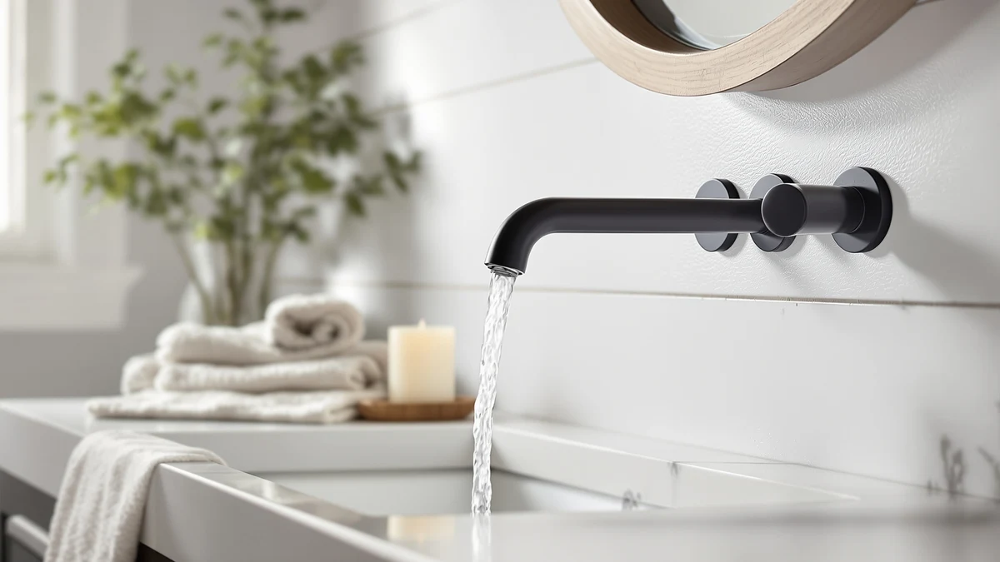

The Best Wall-mounted Bathroom Faucets (2026)
Prices and picks verified as of August 2026. Independent, reader-supported reviews.


Quick Answer
The best wall-mounted bathroom faucets balance a heavy brass body, a finish that resists water spots, and a price that matches your sink's hole spacing. After comparing seven brass faucets across widespread and centerset layouts, the KENES widespread faucet is our top pick, thanks to its brass weight, spot-resistant finish, and $67.99 price. If your sink has a three-hole spread and you want a proven brand instead, the Delta Broadmoor centerset is worth the extra cost.
Our pick: KENES Widespread Bathroom Faucet with — $67.99 Check Price on Amazon
Bottom line: our top pick is the KENES Widespread Bathroom Faucet with Sprayer at $67.99. The best budget option is the Bathroom Faucets at $25.99.
Things to Know Before You Buy
- Widespread and centerset are not interchangeable. A widespread faucet needs three separate holes spaced apart, while a centerset faucet needs a single 4-inch base plate. Measure your sink before you shop for wall-mounted bathroom faucets.
- Every faucet in this guide uses a brass body under its visible finish, which is what actually determines how long it lasts, not the finish color.
- Brushed nickel and matte finishes hide water spots and fingerprints better than polished chrome or bright brass, an easy way to cut down on wiping.
- A recognized brand like Delta costs more, but it buys you easier access to replacement parts and a longer warranty than an unbranded import.
- Price alone does not predict quality here. Our cheapest pick and our most expensive pick both carry the same 4-star average rating.
A few things separate the best wall-mounted bathroom faucets from the rest: a brass body that survives years of daily water exposure, a finish that hides spots between cleanings, and a price that matches how long you plan to keep the faucet installed. Most listings bury those details under stock photography and generic titles, so you end up comparing marketing copy instead of the parts that actually determine whether a faucet lasts.
We compared seven faucets covering both widespread and centerset installations, from unbranded imports under $30 to a Delta backed by a full warranty, using their listed materials, finishes, prices, and customer ratings rather than promotional descriptions. The KENES widespread faucet is our overall pick. It pairs a brass body with a spot-resistant finish at $67.99, a price that sits below both Delta options while still beating the cheapest imports on build quality.
If your sink needs a single-plate centerset faucet instead of a three-hole widespread, or if brand-name parts support matters more to you than upfront cost, we cover those cases too. The comparison table below matches a faucet to your sink's hole spacing and budget; the sections after it cover how we picked and compared this list.
Why You Should Trust Us
I'm Ilane Tall, and I cover bathroom fixtures for Best Bathroom Faucets. Every faucet in this guide is one you can currently buy on Amazon, and I built this list by comparing their listed materials, finishes, prices, and customer ratings side by side rather than relying on marketing copy. When I recommend the best wall-mounted bathroom faucets for a given budget or sink layout, that recommendation is based on what the product listings and buyer feedback actually show, not on which brand paid for placement. Every link in this guide is a standard affiliate link, disclosed here and on our disclosure page, and it never changes which faucet gets recommended first.
How We Picked
We started by pulling every wall-mounted and near-wall bathroom faucet available through our Amazon product database and narrowed the field to models with a brass body, since brass holds up to daily water exposure better than the zinc-alloy faucets that dominate the bottom of the market. From there, we cut any faucet with a customer rating below 4 stars, then grouped the rest by installation type, widespread or centerset, so buyers could compare within their own sink's hole spacing instead of across incompatible layouts. The seven faucets that made this guide to the best wall-mounted bathroom faucets each offer a distinct combination of price, brand backing, and finish, so no two picks compete for the same buyer.
How We Compared
We reviewed each faucet's official product photos, spec sheets, and installation notes line by line, checking listed material, finish, and included hardware against what the description promised. Where manufacturers listed installation notes, we compared hole spacing and deck requirements against standard US bathroom sink drilling to catch faucets that would not fit a typical vanity. We also cross-checked each customer rating and read through recent buyer photos and questions to catch recurring complaints, like leaks, that a listing does not always disclose upfront, then dropped any faucet where that pattern looked like a design flaw rather than a one-off unit. That process is what separates the best wall-mounted bathroom faucets in this guide from the listings that only look good in a thumbnail.
Our Picks

KENES Widespread Bathroom Faucet with
What we like
- Widespread three-hole design fits sinks with separated hot and cold connections
- Brass construction under the finish adds weight and everyday durability
- Holds a 4-star customer average
- Finish resists the water spotting that shows up fastest on a wall-mounted faucet
Flaws but not dealbreakers
- Costs more than five of the other six picks in this guide
- Generic listing name, which can complicate reorders
- No size spec listed, so measure your sink's hole spacing before buying
| Material | Brass + finish |
| Size | — |
The KENES widespread faucet is our pick because it gets the fundamentals right without asking you to pay for a name you're not actually shopping for. It's a three-piece widespread design, meaning the spout and both handles mount separately across your sink's three holes and connect underneath through flexible supply lines rather than a single rigid base. That layout gives you more flexibility in handle placement than a centerset faucet, and it's part of why widespread faucets tend to read as more custom on a bathroom vanity.
Underneath the finish sits a brass body, the same base material found on every faucet in this guide and the reason these seven outlasted the hollow zinc-alloy faucets we cut early in our research. At $67.99, the KENES lands in the middle of this list's price range, cheaper than either Delta and more expensive than the three budget brass picks, and its 4-star customer average backs up that middle position. The tradeoff is a generic product listing name, which makes it worth bookmarking this page if you ever need to reorder the exact same model.

FGKQ Bathroom Faucet 3 Hole
What we like
- Same 3-hole widespread layout as our top pick, for less than half the price
- Brass body with a finish coat, the same base material as every faucet on this list
- 4-star customer average
Flaws but not dealbreakers
- Brand name is unfamiliar, so parts and support are harder to track down
- No size listed, so double-check your sink's hole spacing before ordering
| Material | Brass + finish |
| Size | — |
The FGKQ faucet earns its spot as runner-up because it matches our top pick's 3-hole widespread layout almost feature for feature, at roughly half the price. If your sink already has the three separate mounting holes a widespread faucet needs, this is the straightforward way to fill them without spending $68.
Like the KENES, it's built with a brass body under its finish coat, not the thin-walled zinc alloy that shows up in the cheapest wall-mounted bathroom faucets on Amazon. It carries the same 4-star customer average as our top pick, part of why it sits this close behind it rather than further down the list. The catch is the brand itself. FGKQ doesn't carry the recognition or the parts availability of a Delta, so if a cartridge ever needs replacing years from now, you may have more trouble tracking down an exact match than you would with a bigger name.

Delta Broadmoor Centerset Brushed Nickel
What we like
- Delta is a recognized US plumbing brand, so parts and warranty support are easier to find
- Centerset design fits the standard three-hole layout most bathroom sinks already have
- Brushed nickel finish hides fingerprints and water spots better than polished chrome
Flaws but not dealbreakers
- The most expensive pick in this guide, more than five times our runner-up's price
- Centerset spread won't fit a widespread sink with separated holes
| Material | Brass + finish |
| Size | — |
The Delta Broadmoor is here for one reason: it's a Delta. That name carries real weight in bathroom fixtures, backed by a warranty and a parts network that an unbranded import can't match, and it shows up in this guide as the pick for buyers who value that backing more than the sticker price.
It's a centerset faucet, so instead of three separate pieces spread across your sink, the spout and both handles mount on one base plate sized for a standard three-hole layout, a different installation than the widespread KENES and FGKQ above. The brushed nickel finish resists fingerprints and water spots better than a polished chrome equivalent, which matters most in a shared bathroom that gets wiped down less often than you'd like. At $142.90, it's the most expensive faucet in this guide by a wide margin, more than five times the price of our budget picks, and that cost only makes sense if brand-name support is worth paying for.

Delta Arvo Centerset Brushed Nickel
What we like
- Carries the same Delta brand and warranty backing as the Broadmoor for less money
- Centerset layout matches the most common bathroom sink drilling
- Brushed nickel finish holds up to daily wiping without showing every spot
Flaws but not dealbreakers
- Still costs more than any of the four non-Delta picks in this guide
- Not a fit for a widespread sink with separated holes
| Material | Brass + finish |
| Size | Pack of 1 |
The Delta Arvo is our budget pick, though budget here means relative to its own brand rather than to this entire list. It carries the same Delta name, warranty, and parts backing as the Broadmoor above, at $116.49 instead of $142.90, which makes it the more sensible choice if you want Delta specifically but don't need the Broadmoor's particular styling.
It's also a centerset design, built around a single base plate rather than the three-hole spread of our top two picks, and it ships as a single unit rather than a multipack. The brushed nickel finish matches the Broadmoor's resistance to fingerprints and spotting, and Delta's cartridge design means replacement parts stay easy to find years after purchase. It's still the second most expensive faucet in this guide, so if brand name isn't a priority for you, the Kablle and Ifaucet picks below do the same basic job for a fraction of the price.

Kablle Bathroom Sink Faucet with
What we like
- Priced under $50, well below both Delta centerset options
- Brass and finish construction matches the build of every other pick here
- 4-star customer average
Flaws but not dealbreakers
- Generic product title makes it hard to confirm you're reordering the exact same model
- No listed dimensions, so confirm hole spacing before you buy
| Material | Brass + finish |
| Size | — |
The Kablle sink faucet is the pick for a tight vanity where a bulky widespread setup doesn't make sense. At $47.99, it sits comfortably under both Delta centerset options while still using the same brass-under-finish construction as the rest of this guide.
It carries a 4-star customer average, in line with every other pick here, and its simpler footprint makes it a fast install if you're replacing an old single-handle faucet rather than reworking your sink's hole layout. The main drawback is a generic listing title, shared with several other faucets on Amazon, which makes it worth saving a screenshot of the exact listing and price if you plan to buy a matching second unit down the line.

Kablle Bathroom Faucet with Pull
What we like
- Pull-down head adds reach a fixed-spout faucet can't match
- Priced close to Kablle's other pick, so the added function costs almost nothing extra
- Brass body with a protective finish
Flaws but not dealbreakers
- More moving parts than a fixed spout, which is more that can eventually wear
- Same generic listing-name issue as the other Kablle pick
| Material | Brass + finish |
| Size | — |
The Kablle pull-down faucet adds something none of the other six picks in this guide offer: a spray head you can pull free of the spout for reach across the sink, useful for rinsing hair, filling a bucket, or cleaning the basin itself.
At $49.99, it costs almost exactly the same as Kablle's other pick above, so the added function comes at essentially no premium. It's still built with the same brass body and protective finish as every faucet on this list. The tradeoff is mechanical rather than financial: a pull-hose faucet has more moving parts than a fixed spout, which is simply more that can wear out over years of daily use, even though nothing about this specific listing suggests it fails any faster than its fixed-spout Kablle sibling.

Bathroom Faucets Bathroom Faucet 3
What we like
- The lowest price in this guide by nearly $9
- Still built with a brass body and a protective finish, not hollow plastic
- 4-star customer average
Flaws but not dealbreakers
- The generic listing name is the least descriptive of any pick here
- No brand reputation or long warranty history to fall back on
| Material | Brass + finish |
| Size | Middle |
The Ifaucet listing is the least expensive faucet in this guide by nearly nine dollars, and it earns its place by not cutting the one corner that matters. It's still built with a brass body under its finish, not the hollow plastic construction that shows up in faucets priced this low.
It holds the same 4-star customer average as every other pick here, notable given how much less it costs than the Delta options above. It's a reasonable choice for a rental unit, a guest bathroom, or any renovation where budget matters more than brand recognition. What you give up is the name itself: there's no long warranty history or wide parts network behind it, so if something does eventually fail, you're more likely replacing the whole faucet than a single part.
Quick Comparison
Here's how all seven of the best wall-mounted bathroom faucets in this guide compare on price, material, and rating.
| Product | Material | Price | Rating | Best for | Get it |
|---|---|---|---|---|---|
| KENES Widespread Bathroom Faucet with | Brass + finish | $67.99 | 4 | Widespread sinks, best overall | View on Amazon → |
| FGKQ Bathroom Faucet 3 Hole | Brass + finish | $34.99 | 4 | Widespread sinks on a budget | View on Amazon → |
| Delta Broadmoor Centerset Brushed Nickel | Brass + finish | $142.90 | 4 | Delta brand loyalists | View on Amazon → |
| Delta Arvo Centerset Brushed Nickel | Brass + finish | $116.49 | 4 | Delta backing for less | View on Amazon → |
| Kablle Bathroom Sink Faucet with | Brass + finish | $47.99 | 4 | Tight vanities, simple install | View on Amazon → |
| Kablle Bathroom Faucet with Pull | Brass + finish | $49.99 | 4 | Anyone who wants a pull-down head | View on Amazon → |
| Bathroom Faucets Bathroom Faucet 3 | Brass + finish | $25.99 | 4 | Lowest price, still brass | View on Amazon → |
What is the difference between a widespread and a centerset wall-mounted bathroom faucet?
A widespread faucet has three separate pieces, the spout and two handles, connected under the sink and spaced across three separate holes.
Are brand-name faucets like Delta worth the extra cost?
For most buyers, yes, if you plan to keep the faucet for years.
The Competition
We passed on several two-handle faucets with separate hot and cold knobs. They can look elegant on a wide vanity, but the extra moving parts mean more gaskets that can eventually leak, and buyers shopping for the best wall-mounted bathroom faucets are usually better served by a simpler widespread or centerset design like the picks above.
We also skipped faucets priced under $20 with no listed material. Several import listings advertise solid brass but list a zinc-alloy body in the fine print, and a faucet that corrodes at the base within a year costs more in the long run than paying a bit more upfront. Polished chrome models in the same price range showed the same pattern of vague material claims, so we left them off this list in favor of faucets with brass confirmed in the spec sheet. For most buyers, the KENES widespread faucet remains the strongest of the best wall-mounted bathroom faucets we compared here.